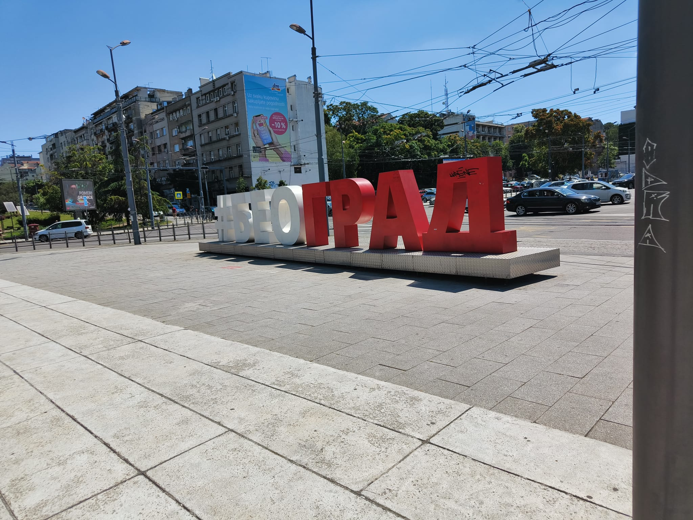
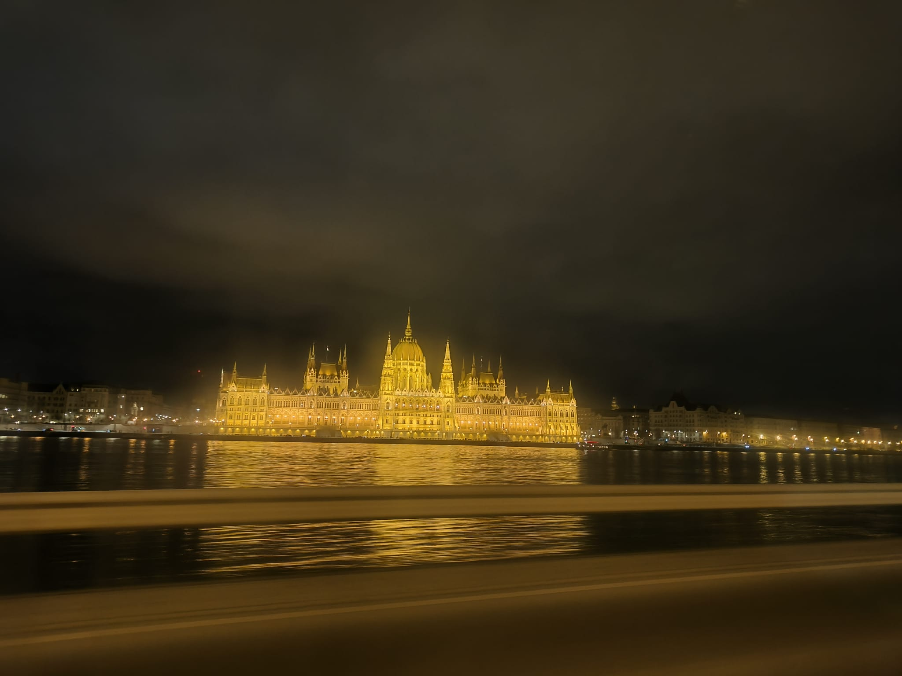

3 ciudades de las que me enamoré
Memorias de un informático itinerante
Skopje - República de Macedonia del Norte

Macedonia huele a aventura, a flores recién cortadas. A vuelta al pasado, al café de sobremesa que tomábamos con nuestros abuelos.
A veces, no es un país fácil para un extranjero. Y ellos lo saben, pero no por ello, dejan de ser amables, alegres y honrados.
Skopje viste con animados trajes y abraza unos recuerdos muy presentes, en una ciudad de enormes contrastes, cruce de caminos y de culturas. Y , por qué no decirlo, grandes desigualdades sociales.
Obligatorio visitar su Viejo Bazar , el Museo del Holocausto y toda su zona centro con su impresionante estatua de Alejandro Magno, rey de los Macedonios.
Belgrado - Serbia

Serbia tiene la sobriedad de alguien que sabe de un pasado doloroso. Llena de cicatrices y dignidad, su capital, Belgrado, se ha abierto al mundo mostrando una ciudad moderna, donde
la gente es amable y trabajadora, lugar seguro como el que más. Belgrado está salpicado de palacios y de edificios que demuestran su grandeza pasada.
Huele a cultura, a paz, a turismo, a hierba recién cortada y a incienso. La fortaleza , la Asamblea nacional, el Teatro Nacional y San Sava son sitios a los que recomiendo encarecidamente ir.
La foto es la típica foto de letras de la ciudad de Belgrado, en cirílico, en el barrio de Ada Ciganlija.
Budapest - Hungría

La que fue mi hogar por varios meses. Budapest suena a jazz en las calles, a tiendas y ríos de gente al rubor de mil lenguas diferentes. Huele a prosperidad, a empleo, a la capital de algo que se supo
enorme en su pasado y transformó sus condiciones para convertirse en una de las ciudades europeas más potentes. Lo impoluto de sus calles sólamente es comparable con sus vistas del Danubio.
Las tiendas de Vati Utca, el Bastión de los Pescadores, la Plaza de los Héroes... Hay tanto y tanto para ver...
Sin dudas, la foto es uno de mis sitios favoritos del mundo, el Parlamento Húngaro.